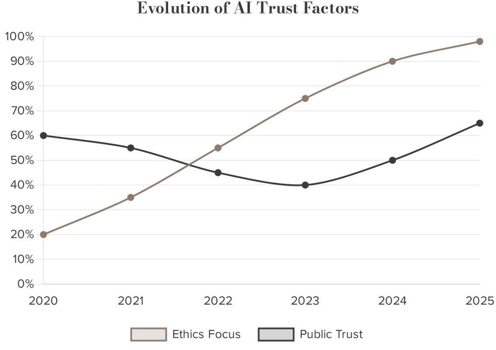
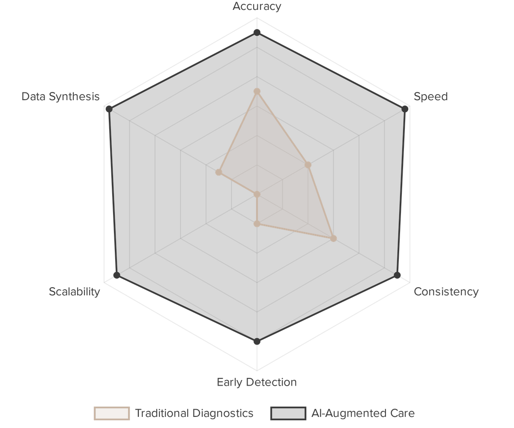

The Human Side of Intelligence – 2026. Artificial Intelligence is no longer a concept of the future—it is seamlessly woven into the fabric of our daily lives. As we navigate this new frontier, the focus must shift from automation to augmentation. We must embrace a Human-Centric Perspective where AI serves to elevate the human experience.
Augmentation Strategy: Rise of Human-Centric AI
The modern approach to AI is as a co-pilot rather than an autopilot. AI acts as an intelligent assistant that empowers humans to make better, faster, and more informed decisions. The core strategies include:
- Co-Pilot vs. Autopilot: AI acts as an intelligent assistant that empowers humans to make better, faster, and more informed decisions.
- Augmentation: Enhancing human creativity and emotional intelligence rather than seeking to replace the human element.
- Purpose-Driven: Aligning AI development with core human needs and the long-term well-being of our global society.
"Trust is not a feature; it is the foundation of human-AI synergy."
AI Ethics & Accountability: The Pillars of Trust
Trust is the foundation of the AI era, built on a robust ecosystem of ethical principles that ensure technology remains a force for good. The pillars of trust include:
- Transparency: Moving away from "black box" systems to understandable logic.
- Fairness: Actively identifying and removing algorithmic bias.
- Human Control: Ensuring humans always have the final say in high-stakes calls.
- Privacy: Enforcing strict data permissions and governance layers.

Healthcare Revolution: AI as a Digital Life-Saver
AI is bridging the global healthcare gap by augmenting clinical expertise and enabling early detection of life-threatening conditions.
"AI is the most powerful stethoscope ever invented."
- Diagnostic Precision: Twice as accurate in interpreting brain scans.
- Early Detection: Spotting signs of 1,000+ diseases years early.

Professional Empowerment: The Future of Work
AI co-pilots are redefining productivity by handling routine tasks, allowing humans to focus on high-value strategy and creative problem-solving.
- GitHub Copilot: Real-time pair programming assistance for faster software development.
- Efficiency Gains: Automating documentation and routine coding tasks seamlessly.
- Skill Evolution: Shifting workforce focus toward architectural and strategic thinking.
- Human Oversight: Ensuring final accountability and ethical judgment remain human.
Human-Centric Service: AI in Customer Experience
Modern AI systems are learning to recognize human emotion, ensuring that technology serves with a "human touch" rather than rigid automation.
"The best customer service is if the customer doesn't need to call you, it doesn't need to talk to you. It just works." — Jeff Bezos
- Sentiment Awareness: AI detects frustration or distress and hands off to humans when needed.
- Context Preservation: Seamless transitions so customers never have to repeat themselves.
- Natural Interactions: Moving beyond rigid scripts to context-aware, human-like conversations.
- Empathetic Design: Prioritizing the customer's emotional state in every interaction.
Strategic Growth: Intelligent Business Strategy
AI-driven insights are helping businesses build deeper, more authentic customer relationships by providing high-context strategies grounded in real-time data.
- Salesforce Einstein: Using years of CRM data to generate tailored outreach strategies.
- Explainable Insights: Providing the "why" behind every suggested business move for clarity.
- Trust Layers: Enforcing strict data permissions and privacy while scaling operations.
- Data-Driven Growth: Identifying new market opportunities through advanced predictive modeling.
Challenges & Guardrails: Navigating the Risks
Acknowledging the limitations and failures of AI is essential for building safer, more resilient systems that respect human values and social responsibility.
- Ethical Alignment: Controversies like Grok highlight the need for strict ethical guardrails.
- Algorithmic Bias: Unvetted data can lead to discriminatory outcomes in critical sectors.
- Regulatory Oversight: Political and social intervention is vital for maintaining public trust.
- Social Responsibility: Ensuring AI development reflects the diverse values of global society.
"The best way to predict the future is to create it, and the best way to create it is together." — Peter Drucker
Global Impact & Inclusion: AI for Social Good
AI has the potential to democratize access to essential services and protect cultural heritage, ensuring that progress benefits the global population.
- Bridging the Gap: Providing health services to 4.5 billion people lacking access.
- Preserving Tradition: Cataloguing and protecting indigenous medical knowledge.
- Inclusive Innovation: Ensuring AI reflects the diversity of the global population.
- Sustainable Progress: Aligning technology with long-term humanitarian goals.
A Collaborative Future
The future of AI is not a race between humans and machines, but a partnership for collective progress. By combining AI's speed with human wisdom and empathy, we can create a sustainable and dignified future for all.
"The most profound technologies are those that disappear. They weave themselves into the fabric of everyday life until they are indistinguishable from it."